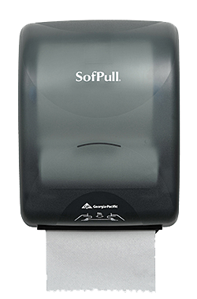

Okay, Georgia-Pacific, We Need to Have a Talk
Published November 17th, 2012 at 23:57:52
Have you ever used a public restroom?
If you’re not a robot, then you probably have, and you’ll recognize this:

However, since I’m betting that this will be read by significantly more robots than people, indulge me while I explain.
In the traditional bathroom, for example one that’s located in a modestly middle-upper class house in a WASP suburb, hand drying is usually accomplished by towels that are left hanging on towel racks. After a fixed amount of time, the towel can be substituted for a clean one and then laundered appropriately. While this system is perfectly apt for the sort of clientele and throughput that such a bathroom would normally see, it simply wouldn’t work with a public restroom at all.
The main problem is that given the sort of people who apparently frequent public restrooms, the sort who apparently have never actually seen a toilet before and have to figure out, through trial and error, how to use it (and who may actually have more waste-producing orifices than the toilet was designed for, if the evidence is to be believed), a hand towel would be such a sopping, filthy mess of fecal matter and urine by the end of a day that it would be biohazardous. The frequency with which a public hand towel would need to be washed would make public restrooms unsustainably labor intensive and expensive.
The solution to this was the paper towel dispenser. Since paper towels are cheap to manufacture and can be disposed of after use, the only upkeep necessary is to empty the trash cans and refill the dispensers, which doesn’t need to happen more than once a day or so. Just leaving a heap of paper towels on the counter isn’t an option, because some asshole will invariably get the whole pile soggy.
If you’ve ever used a paper towel dispenser before, you may have noticed the problem with the one pictured above. That’s right, it doesn’t have a handle. You see, it’s an unfortunate fact of public sanitation that Handles Are Bad. For example, if someone with a horrible disease and oozing sores uses the paper towel dispenser before you, and you happen to have a cut on your hand, you’re screwed. Not only that, but handling filthy things right after washing your hands kind of entirely defeats the purpose of washing them in the first place. Shocking, I know.
There are a few solutions to avoid this sort of cross-contamination, a popular one being Motion-Sensing Technology™, which has made its way onto a lot of toilets and sink faucets; however, the dispenser in question does not have motion detection.
If you’ve ever used this particular model, you probably see what I’m getting at. For those of you who haven’t or don’t, let me put it in plain words. Some brilliant person decided to make a paper towel dispenser where, and this is the important part, the actual paper towel is the “handle” that dispenses paper towels.
While that’s sinking in, let’s go over why this seems to be a great idea on the surface. First off, it allows for an overall simpler design than a motion sensor—no electronics or motor are involved, which makes it less prone to failure. It doesn’t have a handle that will inevitably be used by people with filthy, disgusting hands. It improves on the other manual dispensers (e.g. the metal ones that just have a stack of interleaved paper towels jammed in them) by preventing one paper towel from having any significant contact with the next.
It sounds great.
But what Georgia-Pacific seemingly forgot when they were testing their new product was that normal paper towels are not Kevlar-reinforced. Yes, they either forgot or willfully ignored the fact that the tensile strength of a soggy paper towel is, forgive my technical terminology here, precisely jackshit.
The main problem here, one that overshadows all of the advantages of this design, is that when you try to pull out a paper towel, it falls apart in your hands. Of course your hands will be wet. That’s why you’re trying to get a paper towel in the first place. This could be easily fixed by adding a handle to feed out some when there’s not enough to grab, and in fact there is one. Whoever designed it was either playing a joke or was a complete asshole, though, as the handle is a wheel inset in the side and only has two shallow grooves that you can stick a thumb and forefinger.
The problems don’t end there, though. There’s a cutting blade built into one of the rollers that spins around and chops the paper towel up into nice discrete chunks when you’re feeding it out, presumably to prevent someone from just pulling out half the roll in one go because Wasting Paper Is Bad. The side effect of this is that that manual feed wheel with those shallow groves jams when the blade is in contact. You’d likely be more successful trying to wrench the damn thing off the wall to get the whole roll out.
Ultimately, this paper towel dispenser is an example of a bunch of reasonable ideas coming together to create a complete clusterfuck. Just because something is good in theory doesn’t mean the implementation will be any good. And if I ever find the faculty member who was responsible for deciding to have these installed in almost every restroom on campus, there will be Serious Consequences.